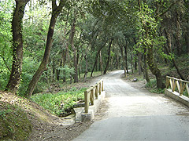
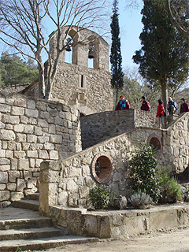

|
Caminada hasta la Ermita de Sant Medir


 |
|
Fue una de las cinco parroquias que existían al término municipal de Sant Cugat y dependía del Monestir de Sant Cugat. Está ubicada en el mismo valle de Gausac. Aunque hay documentación del siglo IX y X que habla del valle de Sant Medir,
no consta expresamente que la capilla estuviera construida. El primer documento donde se cita propiamente es del siglo XIII.
La existencia de la ermita en este lugar, está ligada a la leyenda del martirio de Sant Sever, obispo de Barcelona; y de Sant Medir, campesino de la región.
La edificación es de estilo románico pero ha sido muy reformada posteriormente. El Aplec de Sant Medir se celebra cada año el día 3 de marzo. Sus orígenes se remontan al año 1830, impulsado por un panadero de Sant Cugat que vivía en la villa de Gràcia.
Duración: 45 minutos (ida)
Distancia: 2,2 km
Dificultad: media. Pista ancha
[ Ver mapa ] |
|
|